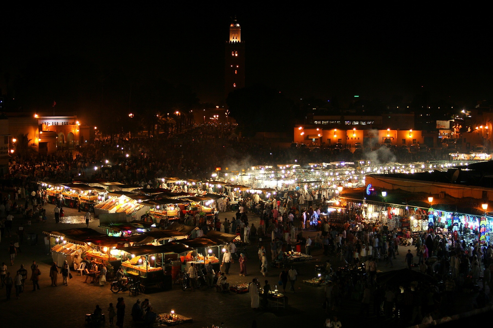
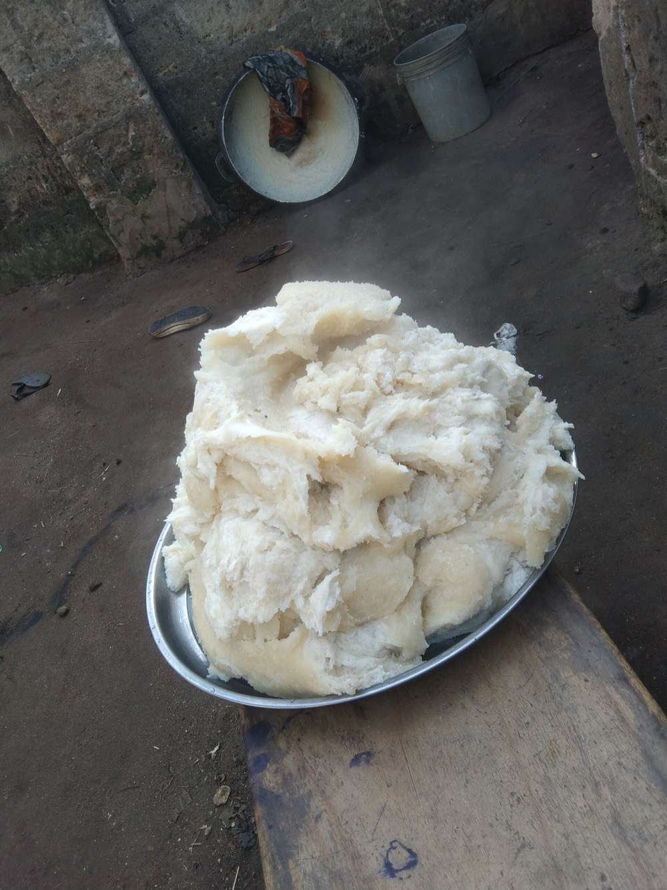
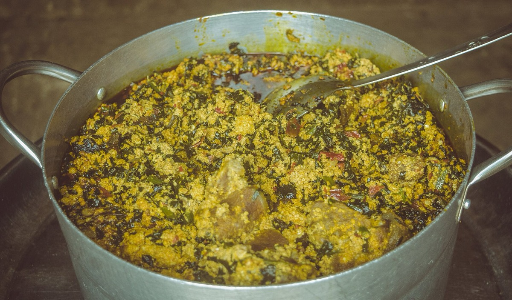
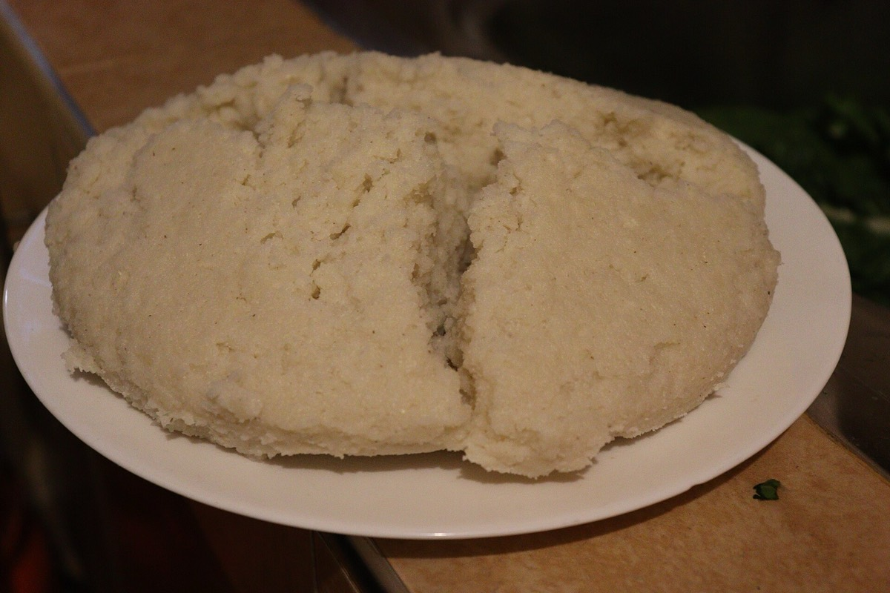
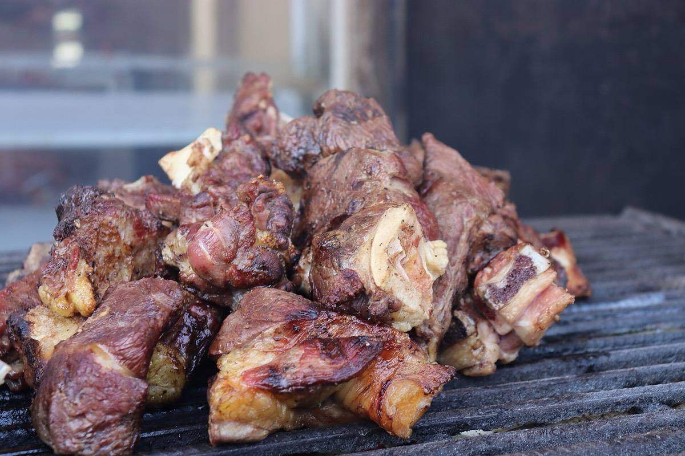
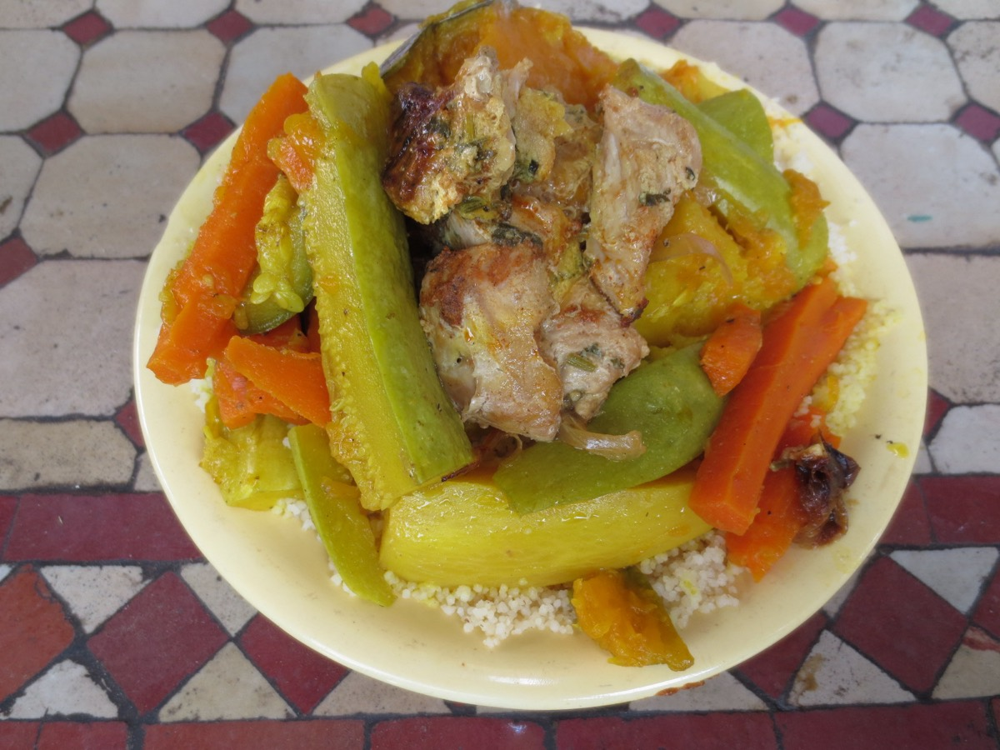
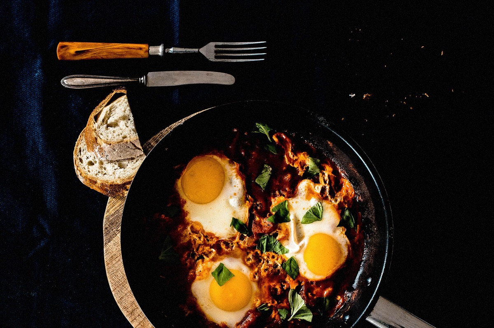

Culinary regions
One Continent, Many Kitchens.
Africa has more than fifty countries and thousands of food traditions. These three regions offer a place to begin.

Region one
West Africa
West African cooking is built on deep, layered flavor: sauces reduced until rich, soups thick with seeds and greens, and starchy staples made to carry them.
The region has a long grain heritage. African rice was domesticated in the inland delta of the Niger River, and millet and sorghum remain important in the drier north. Later arrivals from the Americas, including chili peppers, tomatoes, maize and cassava, were absorbed so completely that they now define many of its best-known dishes.
Popular ingredients
Sauces start with tomatoes and peppers, while cassava and yam give staples their body. Red palm oil adds color and aroma, and groundnuts enrich soups and stews.
Cooking methods
Cooks rely on pounding starchy roots in a mortar, slow simmering soups and stews, and grilling spiced meat over charcoal. Fermented seasonings add savory depth.
Food and community
Food marks weddings, naming ceremonies and festivals, where big pots feed whole communities. Soups and swallows such as fufu are commonly eaten by hand, and offering food to a guest is a basic expression of hospitality.
Dishes to know




Region two
East Africa
East Africa spans highland farms, lakeside communities and an Indian Ocean coast, and its food changes with the landscape.
The Ethiopian highlands are home to teff and to spiced stews served on injera. Around the Great Lakes, meals center on plantains, beans, cassava and sweet potatoes. On the Swahili coast, centuries of trade with Arabia and India brought coconut, cloves and aromatic rice dishes to the table.
Traditional ingredients
Cassava leaves are pounded for stews, plantains are steamed or boiled, and maize is cooked into stiff porridge. Beans are an everyday protein, and traditional spices such as Ethiopia's berbere blend bring heat.
Cooking techniques
Techniques include fermenting teff batter for injera, slow simmering stews, steaming plantains in banana leaves, and roasting goat or beef over charcoal.
A region of diversity
A single country can hold many food cultures. Ugali is an everyday staple in Kenya and Tanzania, and shared platters of injera bring Ethiopian and Eritrean families together. In Rwanda, isombe is a familiar taste of home. See our isombe recipe.
Dishes to know





Region three
North Africa
North African food balances sweet and savory, warm spice and bright citrus, and has grown from centuries of meeting and exchange.
Its foundations are Amazigh (Berber), whose communities have long worked with grains, olives and dried fruit. Arab, Andalusian, Ottoman and French influences each added new layers. In 2020, UNESCO recognized the knowledge and practices of couscous, in a joint listing by Algeria, Mauritania, Morocco and Tunisia.
Popular ingredients
Earthy cumin, floral saffron and sweet cinnamon perfume many dishes. Preserved lemons give a salty brightness, and harissa, the chili paste closely linked to Tunisia, adds heat.
Cooking methods
The defining technique is slow braising in a clay tagine. Couscous is steamed in stages in a couscoussier, and preserving in salt keeps lemons and other foods through the year.
Food traditions
Meals are often shared from a central dish. In many homes couscous is a Friday family meal, and sweet mint tea is offered as a sign of welcome. See our chicken tagine recipe.
Dishes to know



Also on the Table: Southern Africa
Our journey continues south to Durban, home of a curry served in a loaf of bread.